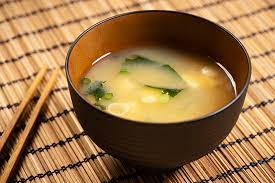

M is for Miso Soup
Question: Is miso????
Answer: YES

This is Miso. It tastes like salt and water. Some miso has tofu, seaweed, and green onion.
Description:
Miso was invented in ancient China and is fermented soy bean paste. It is used in miso soup (obviously) but can also be used to add depth of flavor
to other soups and dishes.
Miso, in some ways, is artisinal. One can buy the expensive refrigerated miso at the store or the miso in packets of instant soup.
Miso is nice to eat on a cold winters day when you need something to warm your insides and make you feel whole again.
Ingredients:
- Miso paste
- Tofu
- Green Onion
- Seaweed
- water
Steps
- Gather the ingredients listed above
- Heat one cup of water to boiling temperature and then remove from heat
- Add in about a tablespoon and a half of miso paste
- Add in tofu to taste
- Sprinkle in some green onion
- Stir thoroughly unitl miso is dissolved
- Pour into a bowl and enjoy!
Back